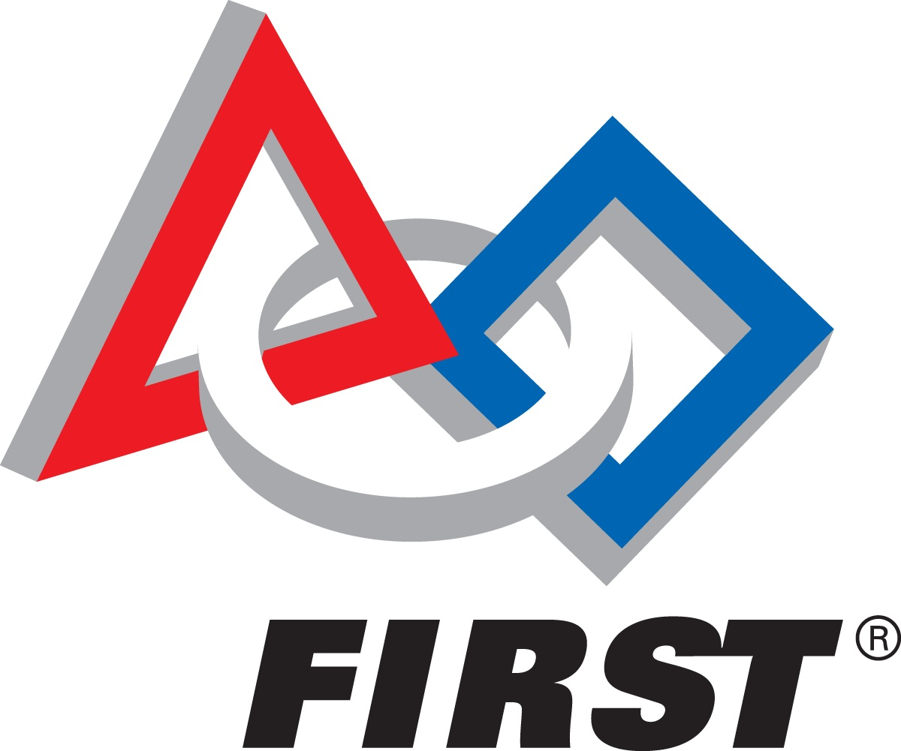

|  |
|
FIRST Vision and Mission"To transform our culture by creating a world where science and technology are celebrated and where young people dream of becoming science and technology leaders." Dean Kamen, Founder FIRST's mission is to inspire young people to be science and technology leaders, by engaging them in exciting mentor-based programs that build science, engineering and technology skills, that inspire innovation, and that foster well-rounded life capabilities including self-confidence, communication, and leadership. Gracious Professionalism“Gracious Professionalism” was a term created by Dr. Woodie Flowers, the FIRST National Advisor and Pappalardo Professor Emeritus of Mechanical Engineering, Massachusetts Institute of Technology. This term not only has a glorious position in FIRST, it is practiced in every FIRST competition to encourage high-quality work, emphasize the value of others, and respect individuals and the community. Gracious Professionalism teaches students to compete fiercely, but for the benefit of society, not with pure victory in mind. Yes, winning is a great deal of excitement, within FIRST, but these winners neither boast nor express any dominance, but they lend a helping hand to guide other players and teams to share their glory. Gracious Professionalism is the root for respect in the FIRST society. FIRST HistoryFIRST was founded in 1989 by inventor DeanKamen, who tirelessly pursued his dream of "creating a world where science and technology are celebrated and where young people dream of becoming science and technology leaders." He was determined to inspire the youth, bridging any uncertainties, to lead us, the leaders of tomorrow's world, to set off a chain reaction of young leaders. He promoted the importance of science and technology to the world and dared us to do better. FIRST inspires young generations to participate in Dean Kamen's dream. Created in Manchester, NH, FIRST has now become a world-wide advocate for science, technology, and math, while spawning new leaders. |